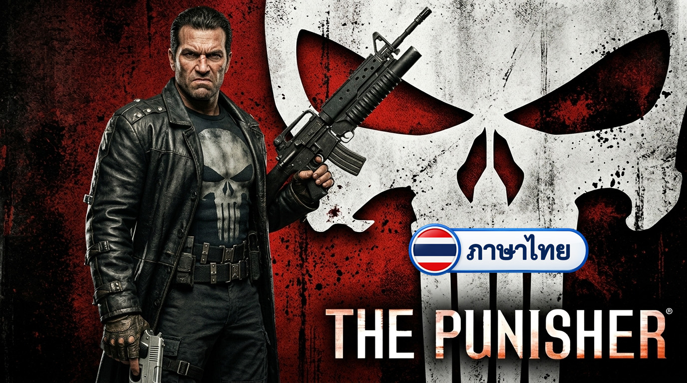
พร้อมใช้งาน
The Punisher
ม็อดภาษาไทยเกม The Punisher
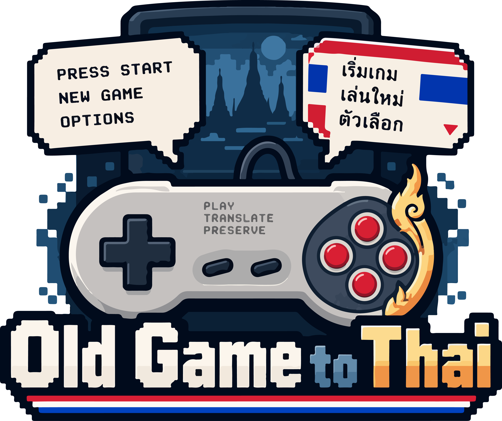
แปลเกมเก่าให้เป็นภาษาไทย

ม็อดภาษาไทยเกม The Punisher
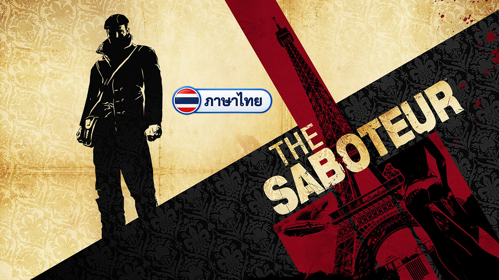
ม็อดภาษาไทยเกม The Saboteur
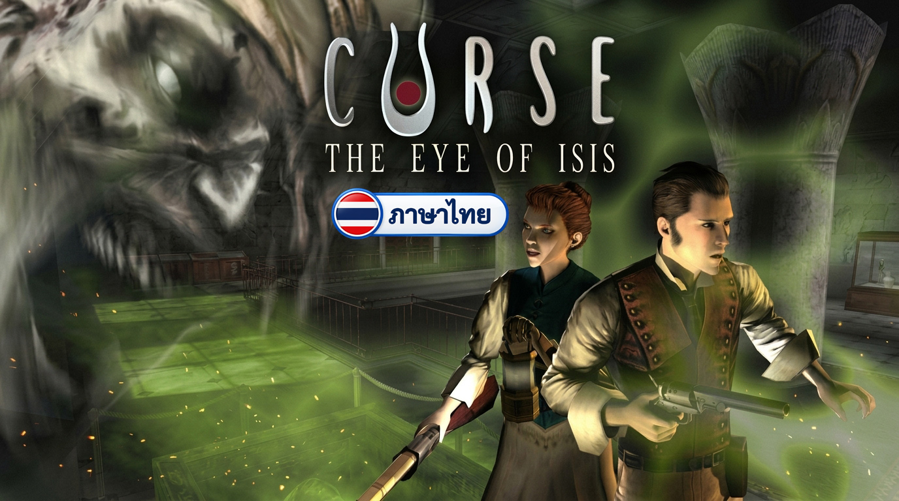
ม็อดภาษาไทยเกม Curse The Eye of Isis
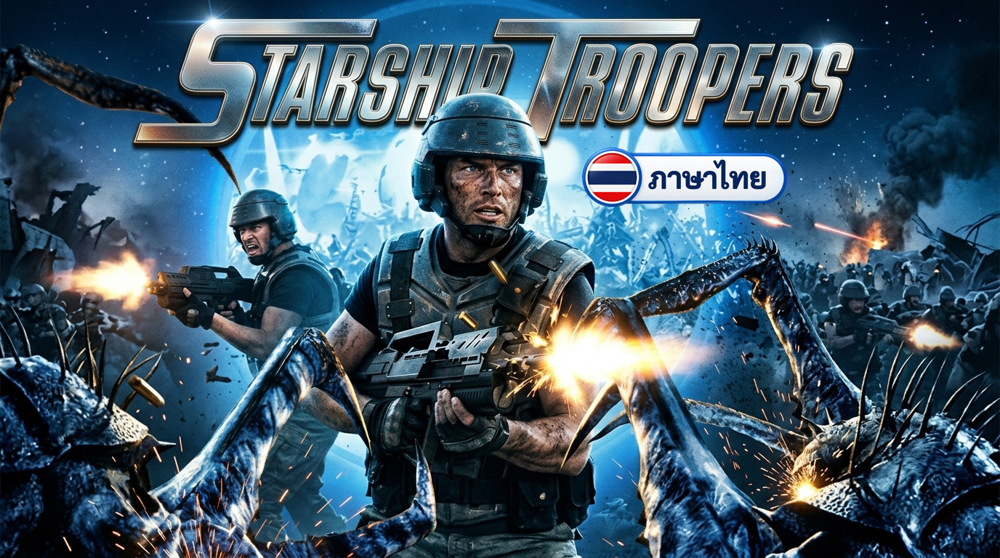
ม็อดภาษาไทยเกม Starship Troopers
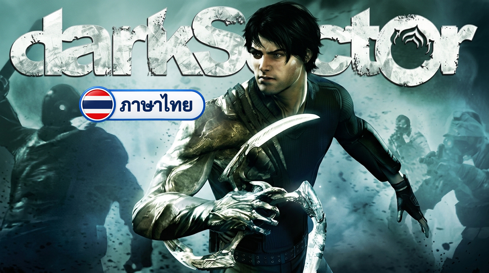
ม็อดภาษาไทยเกม Dark Sector
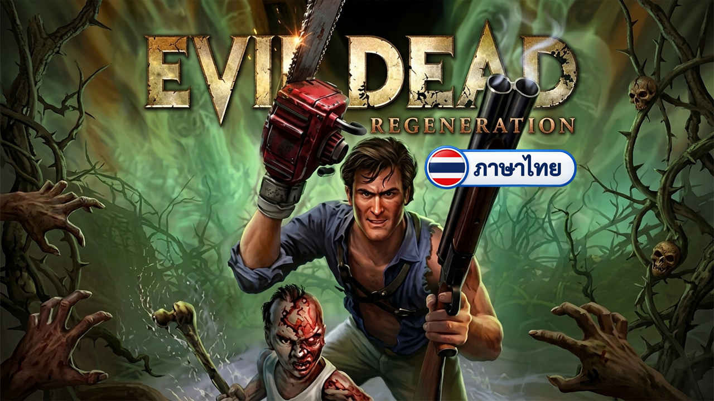
ม็อดภาษาไทยเกม Evil Dead Regeneration
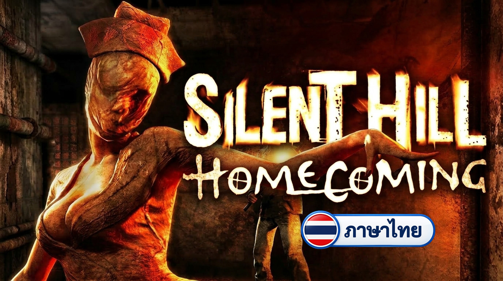
ม็อดภาษาไทยเกม Silent Hill Homecoming
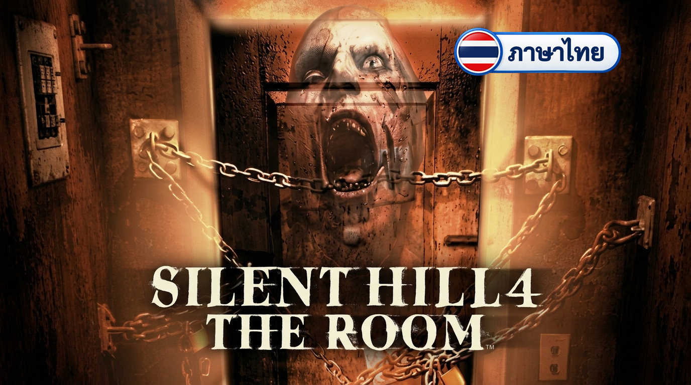
ม็อดภาษาไทยเกม Silent Hill 4: The Room
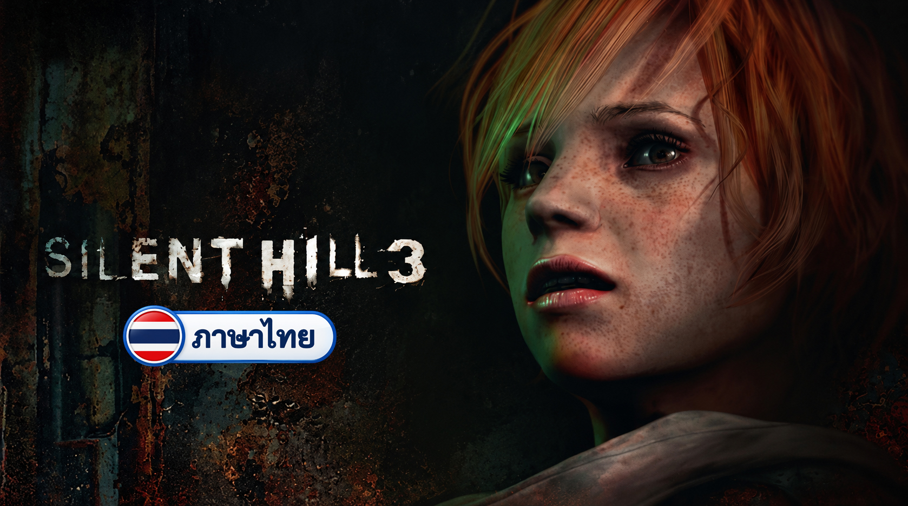
ม็อดภาษาไทยเกม Silent Hill 3
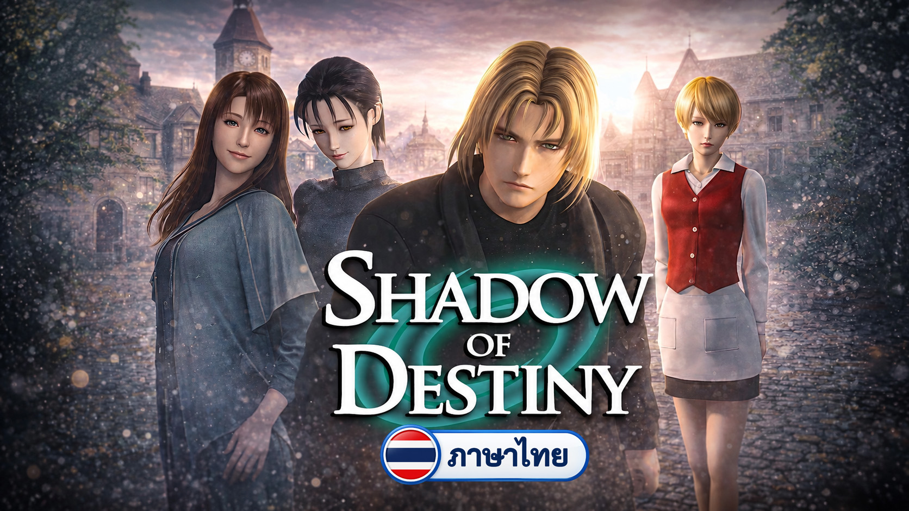
ม็อดภาษาไทยเกม Shadow Of Destiny
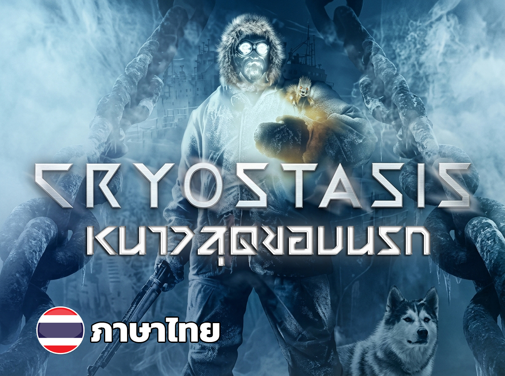
ม็อดภาษาไทยเกม Cryostasis
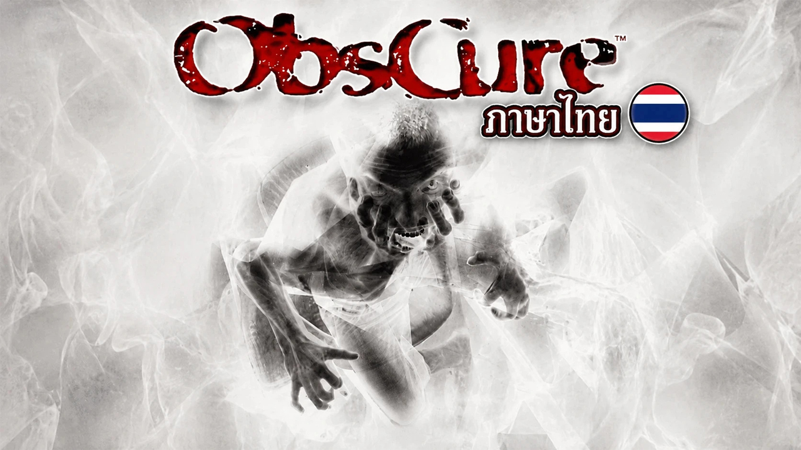
ม็อดภาษาไทยสำหรับ Obscure
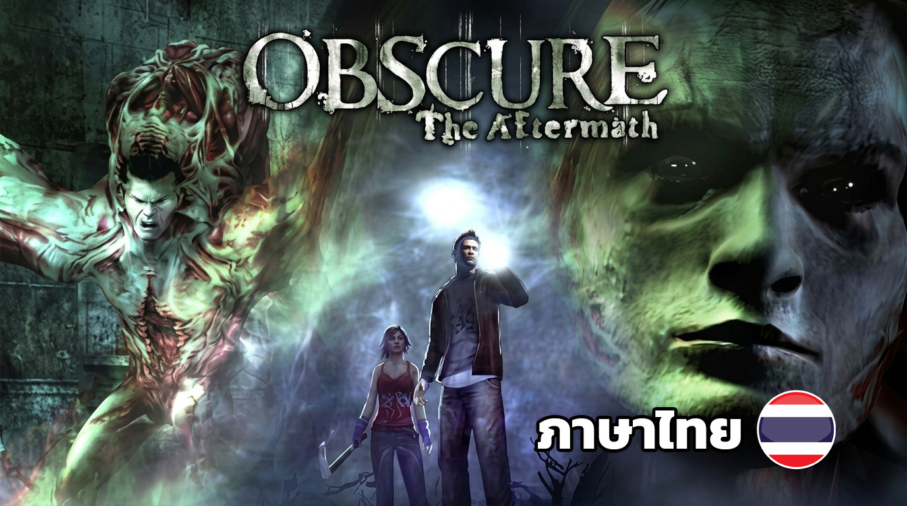
ม็อดภาษาไทยสำหรับ Obscure2
ม็อดภาษาไทยกำลังอยู่ระหว่างการพัฒนา
Old Game to Thai เป็นโปรเจคแปลเกมเก่าๆให้เป็นภาษาไทย และแบ่งปันให้ได้เล่นกันครับ
เกมส่วนใหญ่ที่แปลจะเน้นไปทางเกมเก่าในอดีต มากกว่าเกมปัจจุบัน เป็นเกมที่ผมชื่นชอบและอยากแบ่งปัน ซึ่งการแปลของผมจะอาศัย AI เป็นผู้ช่วยหลัก บางเกมผมอาจจะทดสอบหาข้อผิดพลาดได้ไม่หมด ถ้าใครเจอปัญหาเกมบัค เกมค้าง ติดตั้งม็อดไม่ได้ ต้องข้ออภัยด้วย